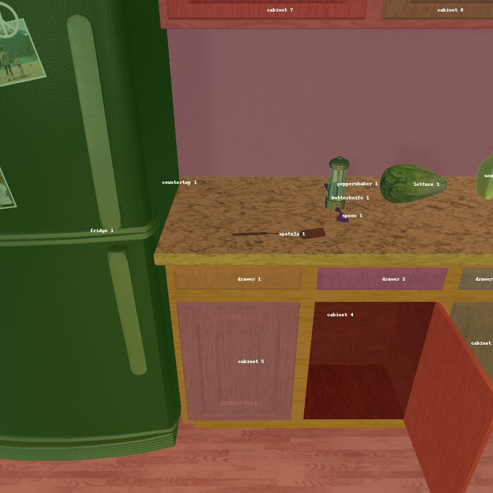

---------------------------------------------------------task: 23---------------------------------------------------------
--------------------------------------------------------------------------------------------------------------------------------------------------------------------
--------------------------------------------------------------------------------------------------------------------------------------------------------------------
Step:--------------------------------------------------------------------------9-------------------------------------------------------------------------------
----------------------------------------
VLM Prompt:
Image1:
Image2:
**Instruction**
1. Analyze the provided image to identify all visible household objects, focusing on those relevant to the task description "heat some mug and put it in coffeemachine."
2. Use the analysis of the image and the task hint "The agent must find an object of the desired type, pick it up, go to a microwave, heat the object with the microwave, then find the correct location to place it, and put it down there. The agent does not need to use the microwave button or open the microwave to heat the object, and the agent just needs to do action that is "heat the object with the microwave"." to answer the question: what is the most reasonable action in the choices for the task description "heat some mug and put it in coffeemachine"?
4. Decide and write the answer using the template: The answer is: (i): , where i is the real number. If there is no desired object in the image, search every place based on **Initial Observation** to find the object. And if no one is exactly correct, choose a similar answer.
**Initial Observation**
You are in the middle of a room. Looking quickly around you, you can see cabinet (1-15), fridge (1), countertop (1-4), drawer (1-4), microwave (1), toaster (1), coffeemachine (1), garbagecan (1), sink (1), stoveburner (1-3), sinkbasin (1)
**Answer Choices**
(1): go to cabinet 2
(2): go to fridge 1
(3): go to countertop 1
(4): go to cabinet 5
(5): go to cabinet 6
(6): go to cabinet 7
(7): go to drawer 1
(8): go to drawer 2
(9): go to cabinet 8
(10): go to drawer 3
(11): go to cabinet 9
(12): go to cabinet 10
(13): go to drawer 4
(14): go to microwave 1
(15): go to cabinet 11
(16): go to toaster 1
(17): go to cabinet 12
(18): go to cabinet 13
(19): go to cabinet 14
(20): go to cabinet 15
(21): go to countertop 2
(22): go to coffeemachine 1
(23): go to garbagecan 1
(24): go to countertop 3
(25): go to countertop 4
(26): go to sink 1
(27): go to stoveburner 1
(28): go to stoveburner 2
(29): go to stoveburner 3
(30): go to sinkbasin 1
(31): open cabinet 4
(32): close cabinet 4
(33): take lettuce 1 from cabinet 4
(34): take peppershaker 1 from cabinet 4
(35): take soapbottle 1 from cabinet 4
(36): take spatul1 from cabinet 4
(37): take spoon 1 from cabinet 4
(38): take butterknife 1 from cabinet 4
(39): examine cabinet 4
**Answer**
Let's think step by step by following the instructions.
----------------------------------------
----------------------------------------
Original Response:
Firstly, we need to find a mug to heat. Mugs are typically stored in cabinets or on countertops near a coffeemachine or a sink. In Image1, we cannot see any mugs on the visible countertops or inside the open cabinets. In Image2, we can see cabinet 4 is open, but there are no mugs inside; instead, there is lettuce, a peppershaker, soapbottle, spatula, spoon, and butterknife.
Based on the Initial Observation, we have not yet checked all the cabinets. Since we need a mug and it is not visible on the countertops or in the open cabinet (cabinet 4), we should check the other cabinets.
Among the answer choices, the ones that involve checking cabinets are:
(1): go to cabinet 2
(4): go to cabinet 5
(5): go to cabinet 6
(6): go to cabinet 7
(9): go to cabinet 8
(11): go to cabinet 9
(12): go to cabinet 10
(15): go to cabinet 11
(17): go to cabinet 12
(18): go to cabinet 13
(19): go to cabinet 14
(20): go to cabinet 15
Since we are looking for a mug, it would be reasonable to check the cabinets nearest to the coffeemachine or other kitchen appliances. Cabinet 4 is already open and does not contain a mug, so we can eliminate that option.
The most reasonable action from the choices would be to check another cabinet close to the coffeemachine. Since we do not have a direct view of the coffeemachine's location in the images, we will choose a cabinet that is commonly used for storing mugs.
The answer is: (1): go to cabinet 2.
----------------------------------------
----------------------------------------
>>> Refine Original VLM Response and Get Pure Action: go to cabinet 2
----------------------------------------
-----------------------------------------------------------------
Running time: 16.141662120819092 seconds
Total Money: 11.407480000000003
-----------------------------------------------------------------
-----------------------------------------------------------------
Text Observation:You arrive at loc 1. The cabinet 2 is closed.
-----------------------------------------------------------------
UNSUCCEED